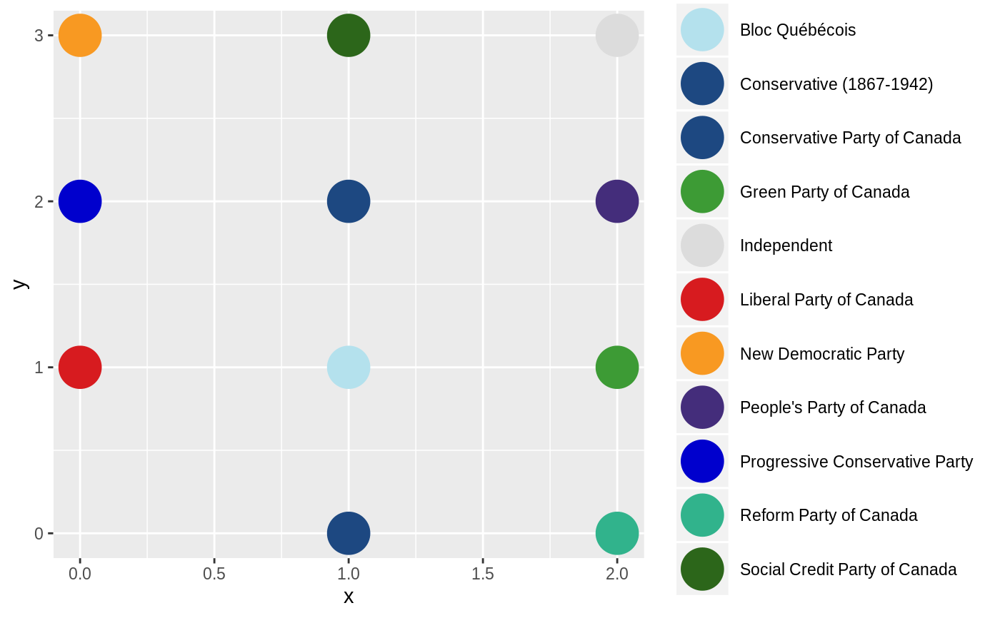
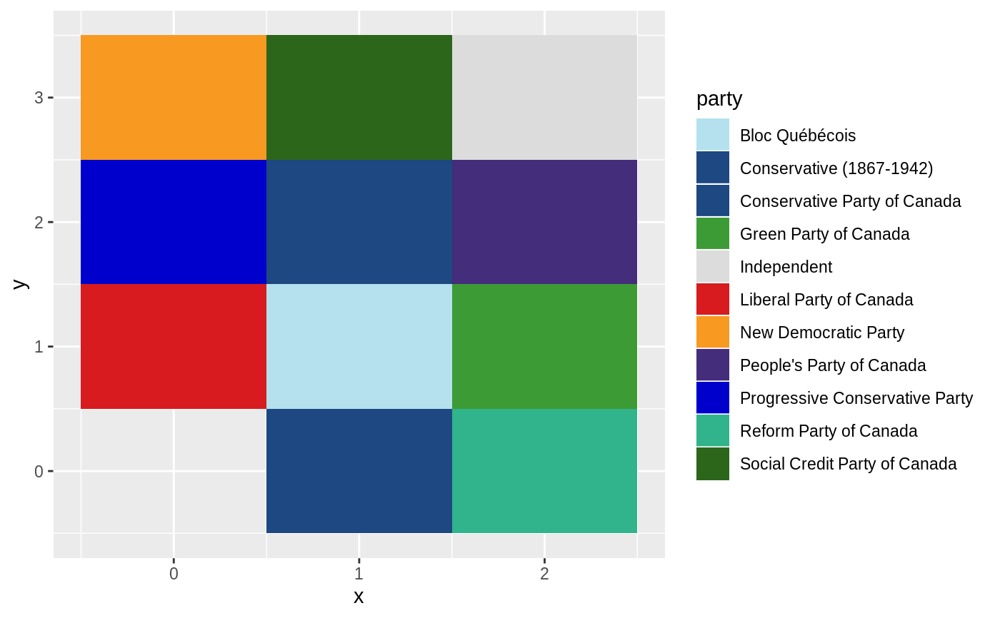

Colours for Canadian Political Parties
party_colour( party, party_colours = canadian_party_colours(), palette_extra = scales::hue_pal(), na.value = "grey50" ) pal_party( party = character(0), party_colours = canadian_party_colours(), palette_extra = scales::hue_pal() ) scale_colour_party( ..., party_colours = canadian_party_colours(), palette_extra = scales::hue_pal(), aesthetics = "colour" ) scale_fill_party( ..., party_colours = canadian_party_colours(), palette_extra = scales::hue_pal(), aesthetics = "fill" ) canadian_party_colours() ScaleParty
| party | A vector of party names like those seen in the |
|---|---|
| party_colours | Known party colours, like those returned by
|
| palette_extra | A palette for assigning colours to rare parties like |
| na.value | The colour to be used for |
| aesthetics, ... | Passed to |
An object of class ScaleParty (inherits from ScaleDiscrete, Scale, ggproto, gg) of length 2.
#> [1] "grey50" "#d71b1f" "#1d4881"library(ggplot2) cols_df <- tibble::tibble( col = canadian_party_colours(), party = names(col), n = seq_along(col), x = n %/% 4, y = n %% 4 ) ggplot(cols_df, aes(x, y, col = party)) + geom_point(size = 10) + scale_colour_party()